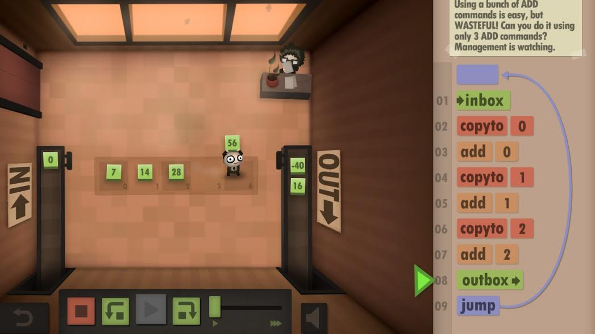

BUILDING A GIT LEARNING GAME
A playful approach to version control
bleeptrack & blinry
Git is hard!

Human Resource Machine
A Git learning game!
- open-source
- cross-platform
- extremely interactive
- builds intuition


Staging
Level Format
title = Working together
cards = clone checkout commit-auto pull push
[description]
"A friend has asked you to help with an essay about hobbies!
She has already started to write a list, and started
tracking it with her own time machine!"
[congrats]
"Thanks, these are some really nice hobbies!
Hope we can do that together soon!"
Level Format
[setup]
rm -rf .git
[setup friend]
echo "~ Best hobbies ~" > hobbies.txt
git add .
git commit -m "Initial version"
Level Format
[win]
# Add at least two more lines to hobbies.txt
test "$(cat hobbies.txt |wc -l)" -ge 6
# Commit your result.
test "$(git show main:hobbies.txt |wc -l)" -ge 6
[win friend]
# And use `git push` to send it to your friend!
test "$(git show main:hobbies.txt |wc -l)" -ge 6
Next steps
- More story: time travel + solarpunk?
- More content: submodules?
- A lot of polishing!
What can beginners get out of the game?
- A fun introduction to Git
- An intuitive understanding
- Merging/rebasing
- Staging/unstaging
- Real-world knowledge
What can advanced users get out of the game?
- Get to know advanced features
- Finding bugs with
git bisect -
Patching things with
git replace - Deep-dive into Git's internals
- What's inside of
.git/? - "Distributed graph theory tree model"?
Reach out to us if you want to:
- Spread the word (educators? mentors?)
- Test the game (at all experience levels)
- Build your own levels
@bleeptrack / @blinry